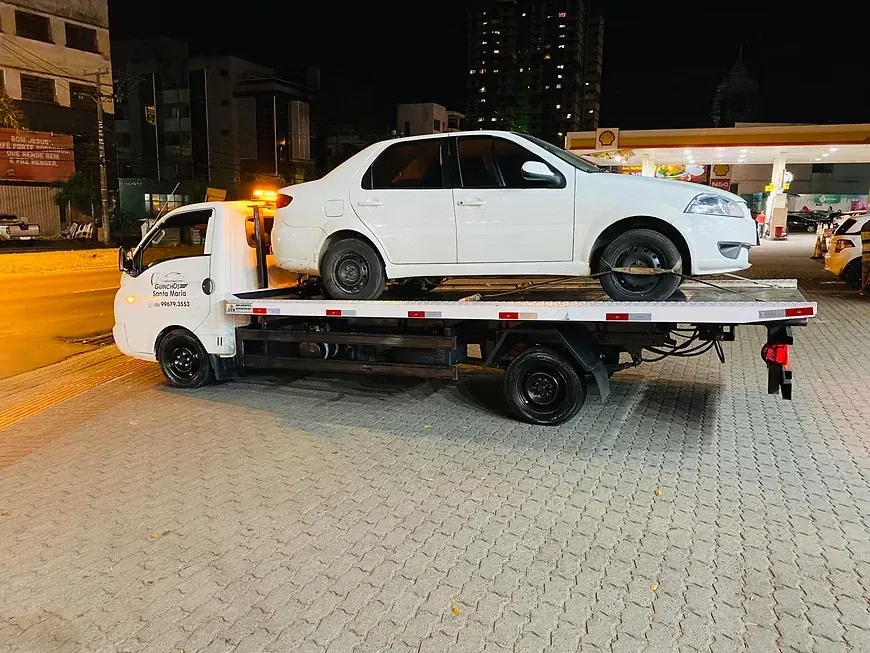
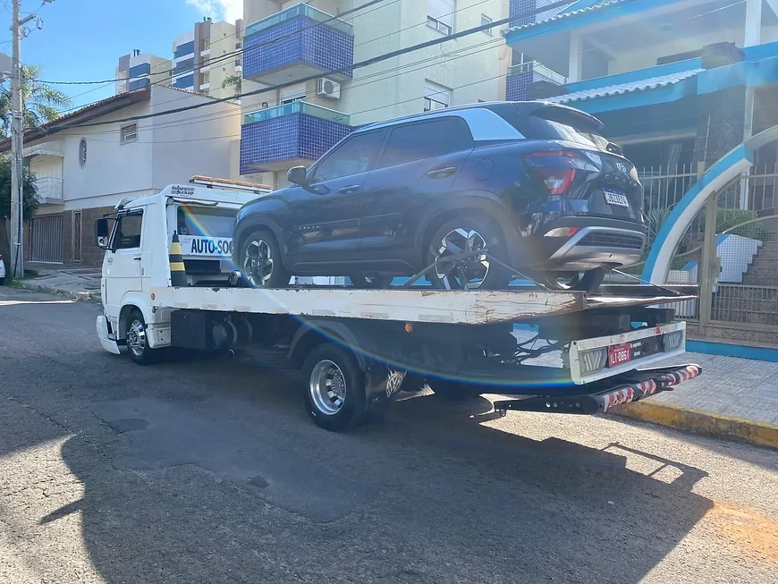
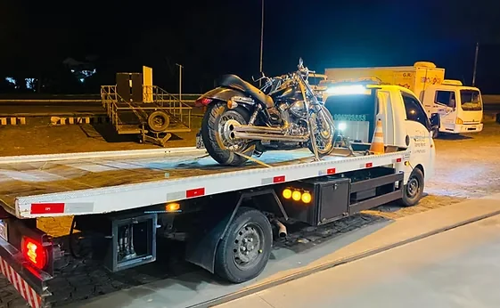
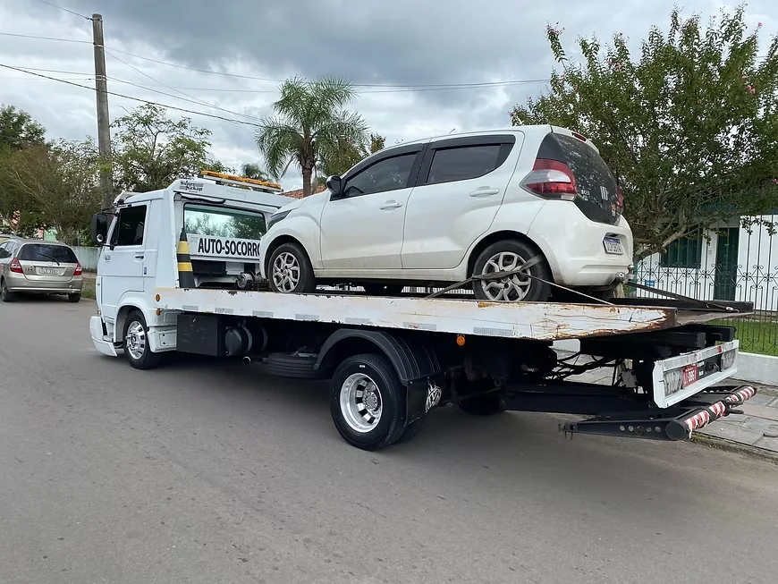
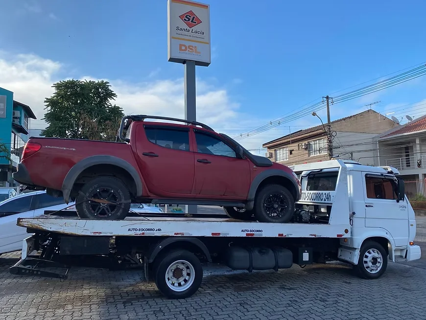
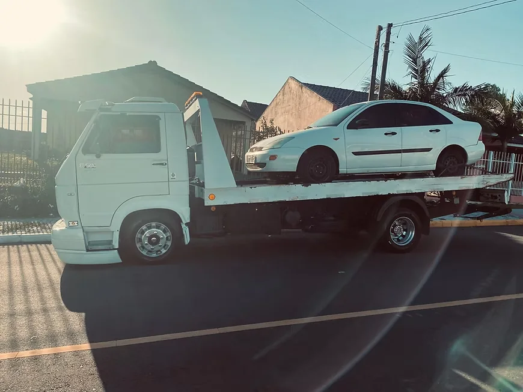
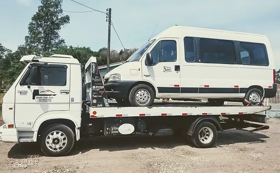
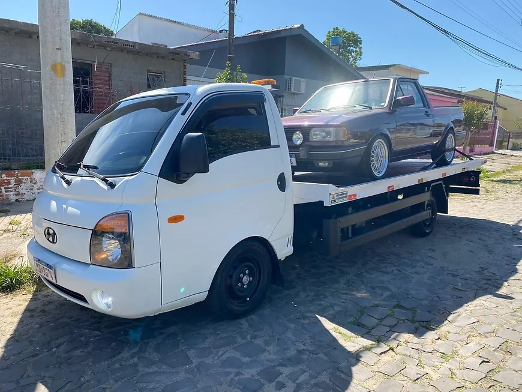

Guincho para carros
Transporte seguro de carros de passeio em situações de pane, acidente ou necessidade de remoção.
Seu veículo parou? Conte com atendimento rápido e seguro em Santa Maria e em todo o território nacional, a qualquer hora do dia.
(55) 99679-3553

Se o seu carro, moto ou utilitário apresentou uma pane, sofreu uma colisão ou precisa ser transportado, entre em contato. Nossa equipe atende 24 horas em Santa Maria e em todo o território nacional.
Carro quebrou na rua
Bateria descarregada
Veículo envolvido em acidente
Moto precisa ser transportada
Van ou utilitário parado
Veículo precisa ir para a oficina
Atendimento de guincho e assistência veicular 24 horas, para diferentes tipos de veículo.
Transporte seguro de carros de passeio em situações de pane, acidente ou necessidade de remoção.
Transporte e remoção segura de motocicletas, com fixação adequada para evitar danos.
Atendimento para caminhonetes e veículos utilitários de maior porte.
Transporte seguro de vans e veículos maiores, com estrutura preparada para o peso.
Serviço de auxiliar de partida para veículos com bateria descarregada.
Transporte de veículos para outras cidades, com atendimento em todo o território nacional, conforme a necessidade.
Equipamentos, veículos e atendimentos realizados pela nossa equipe em Santa Maria e região.







Estamos disponíveis para atender você a qualquer hora, todos os dias da semana.
Sabemos que ficar parado é uma situação urgente. Por isso, buscamos atender com rapidez.
Seu veículo é transportado com cuidado, sobre plataforma adequada para cada tipo de carga.
Conhecemos Santa Maria a fundo e também atendemos solicitações em todo o território nacional.
Atendimento responsável do primeiro contato até a entrega do veículo.
Chame pelo WhatsApp ou ligue para (55) 99679-3553.
Explique onde você está e o que aconteceu com o veículo.
Nossa equipe orienta você e realiza o atendimento.
Temos base em Santa Maria, RS, oferecendo serviços de guincho e assistência veicular 24 horas para carros, motos, caminhonetes e vans. Também realizamos reboque de longa distância para outras cidades, atendendo solicitações em todo o território nacional conforme a necessidade.
Se você precisa de um guincho perto de você, entre em contato pelo WhatsApp ou telefone e informe sua localização. Nossa equipe orienta os próximos passos.
Sim. O serviço possui atendimento 24 horas, todos os dias.
Sim, a empresa oferece serviço de guincho para motos.
Sim.
Sim.
Sim. A empresa oferece serviço de recarga de bateria / auxiliar de partida, a partir de R$ 80,00.
Sim, realizamos reboque de longa distância para outras cidades, com atendimento em todo o território nacional. O prazo e o valor são confirmados conforme o destino.
Sim. Aceitamos pagamento no cartão e emitimos nota fiscal do serviço.
Entre em contato pelo WhatsApp ou telefone e informe sua localização e a situação do veículo.
O valor pode variar conforme distância, tipo de veículo e situação. Entre em contato para solicitar uma cotação.
Fale agora com a Guinchos Santa Maria e solicite atendimento. Confiança que te leva mais longe.